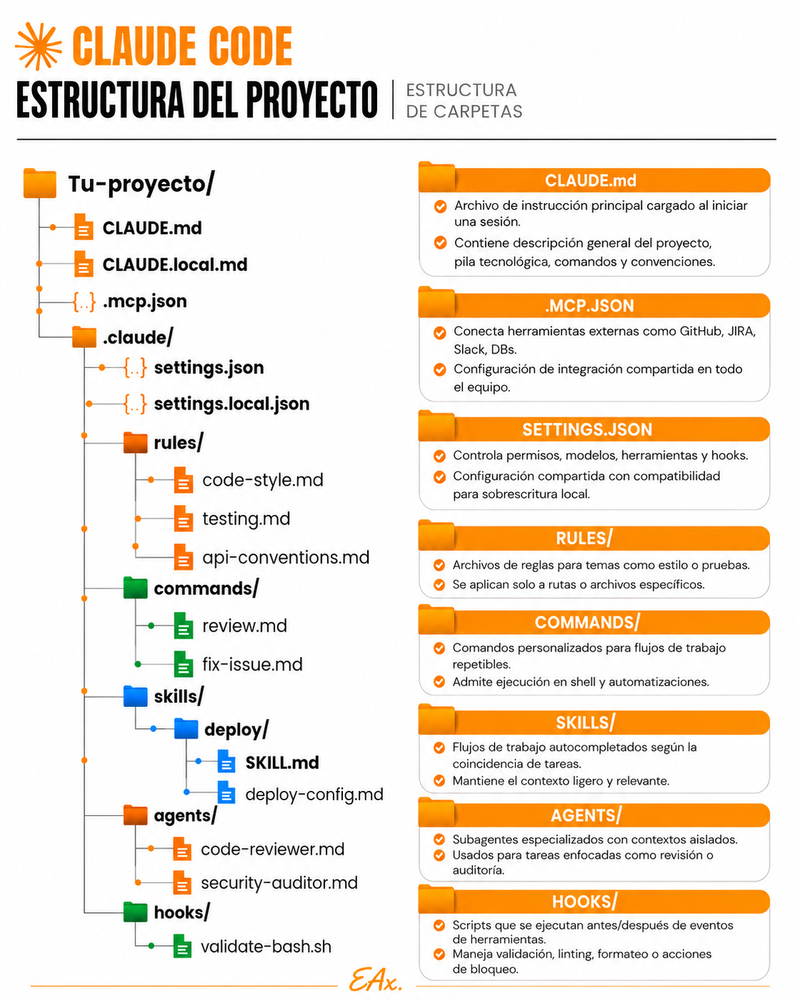

Obsessed with business logic
Systems Engineer · Distributed Architecture · AI Automation
Not demos. Not prototypes. Systems that stay up.
Esperas que la IA sepa lo que nunca le dijiste
La IA no adivina lo que tú sabes de tu negocio; hay que dárselo. Y en trabajos largos, repetir ese contexto en cada conversación es perder tiempo.
La calidad del resultado depende del contexto que recibe
Información puntual va en la solicitud. Información que se repite va en un proyecto, una sola vez.
Un proyecto se monta con 4 bloques: identidad, procesos y reglas, base de conocimiento y estándares de salida.
Los 4 bloques, llevados a archivos

Identidad y reglas → CLAUDE.md · conexiones a tus apps → .mcp.json · estándares de salida → rules/. El contexto deja de vivir en tu memoria.
El contexto persistente hace a la IA tuya
Repites el mismo contexto en cada chat y obtienes respuestas genéricas que no conocen tu operación.
La IA responde como tu empresa, desde tus documentos como fuente de verdad. (Solo se monta sobre procesos ya validados.)
Carga tu primer proyecto
Identidad + procesos y reglas.
Base de conocimiento + estándares de salida.
Repite la pregunta de L02 desde el proyecto.
Plantilla: PLANTILLA_carga_de_proyecto. Siguiente: L04 — Anatomía del prompt.
Las preguntas que llenan el proyecto
No te limites a estas. Sigue preguntando hasta que un compañero nuevo pudiera trabajar solo con lo que cargaste.
¿Qué información se repite en muchas tareas (→ va al proyecto)? ¿Qué necesitaría saber alguien nuevo para este trabajo?
¿Qué documento es la "fuente de verdad" y qué tiene prioridad si hay contradicción? ¿El proceso ya está validado?
¿Qué manuales, datos, FAQs o historial debe consultar como verdad?
Arma los 4 bloques de tu proyecto
TAREA: Ayúdame a preparar el contexto de un proyecto en 4 bloques. OBJETIVO: Que la IA responda como mi negocio, sin repetir el contexto cada vez. CONTEXTO: [identidad · procesos y reglas · documentos fuente · estándares de salida]. PROCESO: Si te falta algo de algún bloque, pídemelo antes de redactar.
Segundo prompt (probar el contexto persistente) en la lección.
Tu proyecto en 4 bloques (PLANTILLA_carga_de_proyecto)
No es un nombre: son estos 4 bloques, cargados en orden. Solo sobre procesos ya validados.
BLOQUE 1 · Identidad y audiencia → qué es, objetivos, a quién sirve BLOQUE 2 · Procesos y reglas → flujos, cuellos de botella, criterios BLOQUE 3 · Base de conocimiento → documentos fuente; qué prioriza si hay choque BLOQUE 4 · Estándares de salida → tono, formato de entregas, límites
Plantilla con el detalle de cada bloque: plantillas/PLANTILLA_carga_de_proyecto.md.